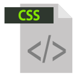
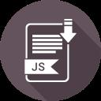
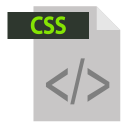
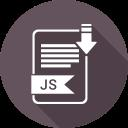

Développeuse web
2019 à aujourd'hui: Simplon.co Réunion
- Utilisation de Github
- Connaissance en logiciel d’édition de code (Visual Studio code)
- Savoir coder un site en HTML5 / CSS 3
- Utiliser un préprocesseur CSS (SASS)
- Emploi de langages de programmation (Java-Script)
- Conception d’applications Web
- Conception de sites WordPress
- Framework CSS (Bootstrap, bulma)
- Framework JS (Vue-JS)
- Virtualisation Docker
- Savoir travailler en autonomie et en équipe
Diplôme d'accès aux études supérieures
2014 - 2018: Université Rennes1
Obtention du diplôme équivalent au niveau IV
Concours Agent territoriale spécialisé en Ecole Maternelle
2005 - 2006
Obtention du concours
Formation Agent de loisirs
AFPA de Saint-Nazaire.
Obtention du Certificat professionnel de niveau V
 


